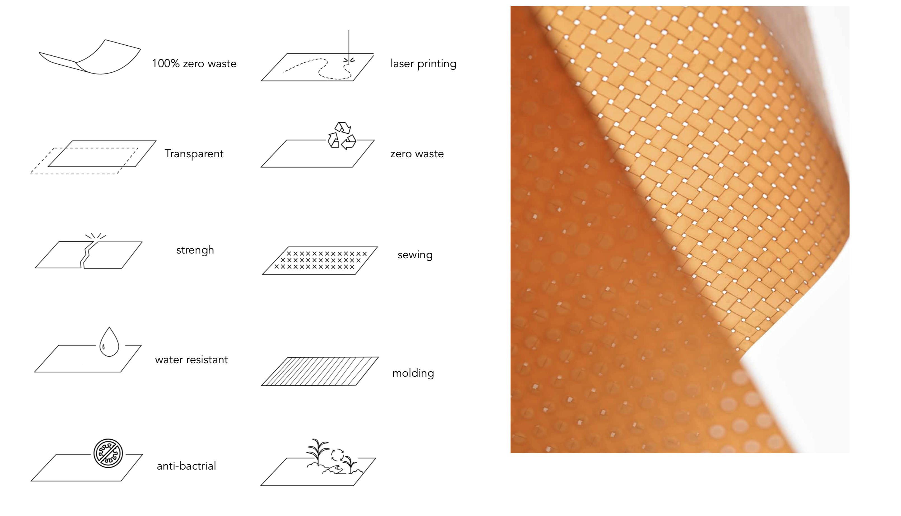

Material capability
Banana and orange peel or soy-milk are combined with a natural binding agent as the substrate. The resulting composite is fully biodegradable and can be easily reused after the re-cooking process.

Classic Editions

Original
Banana and orange peel or soy-milk

Refruit
Banana and orange peel or soy-milk
Resulting composite is fully biodegradable and can be easily reused after the re-cooking process. It is a 100% bio-degradable, zero waste natural product. Moreover, the bio-material provides similar toughness, durability and water resistance as normal leather material, especially it conserves fruitiness smell, refined texture and feels very good on touch.